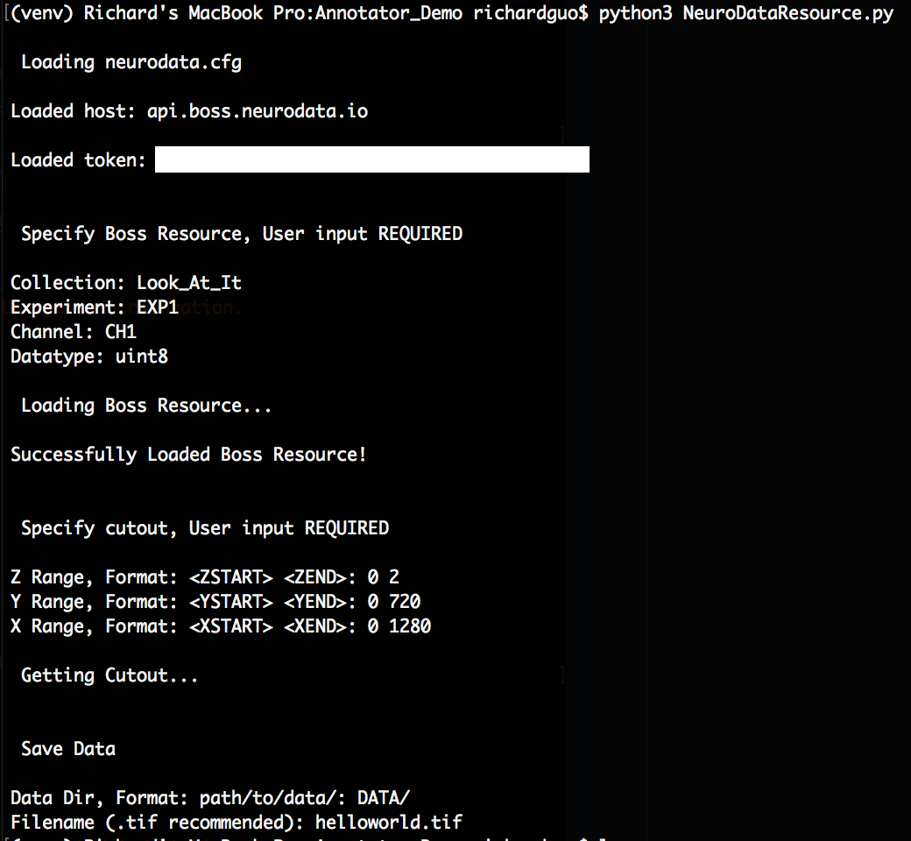

Welcome to NeuroData Annotate’s documentation!¶
- Clone annotation repo. In Terminal type:
git clone https://github.com/rguo123/NeuroData_Annotate.git
- Install dependences by typing:
pip3 install -r requirements.txt - Get BOSS API token by logging in to https://api.boss.neurodata.io/. Note: You need resource manager permissions to upload data to the BOSS.
- Create
neurodata.cfgfile and insert BOSS token as shown below:
[Default] protocol = https host = api.boss.neurodata.io token = INSERT TOKEN HERE
- Pull data from BOSS by typing
python3 NeuroDataResource.pyin terminal and following the input prompt.

- Annotate with FIJI:
- Install onto your system using https://imagej.net/Fiji/Downloads/.
- Open FJII, and start a new blank TrakEM2.

- Navigate to the folder of you image volume, and select “open”.
- This should have changed your ImageJ canvas. Now, drag your volume (helloworld.tif) from your folder into the canvas.
- In the popup window, make sure that “Resize canvas to fit stack” is checked. After clicking OK, your canvas should snap to your image.
- In your TrakEM2 properties, right click on “anything” in the template column and add a new “area_list”.

- Drag the entire “anything” folder into “Unitled 0” in the middle column.
- Right click the nested “anything” folder inside “Untitled 0” and add a “new area list”.

- Annotate Your Data by drawing all over it. You can scroll to annotate different slices in your tif.
- When done, right click your canvas and select “Export” -> “Arealists as labels (tif)”.
- A black screen will appear - these are your annotations, don’t worry if you can’t see them. Save the annotations with cmd+s.
- Your annotations are now saved in your “DATA” folder under the name you gave them.
- To push annotations to the BOSS, edit
gen_commands.pyfile and input annotation file parameters. - Once all inputs are filled out, type
python3 gen_commands.pyin terminal. - Paste command line output into terminal.
- Pray it works.